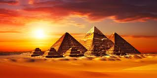
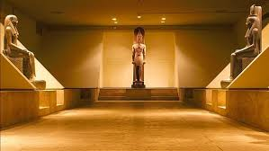
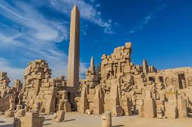

most beautiful places in Egypt
pyramids
The Giza pyramid complex (Arabic: مجمع أهرامات الجيزة), also called the Giza necropolis, is the site on the Giza Plateau in Greater Cairo, Egypt that includes the Great Pyramid of Giza, the Pyramid of Khafre, and the Pyramid of Menkaure, along with their associated pyramid complexes and the Great Sphinx of Giza.
Luxor Museum
The Luxor Museum was inaugurated in 1975. It is a two-story building. The range of artifacts on display is far more restricted than the country's main collections in the Egyptian Museum in Cairo; this was, however, deliberate, since the museum prides itself on the quality of the pieces it has, the uncluttered way in which they are displayed, and the clear multilingual labeling used.[citation needed] The museum was conceived by the Egyptian Ministry of Culture, which hired Dr. Mahmud El Hakim, a top Egyptian architect, to create the plans in 1962. The installation of the museum art works came later and was finished between 1972 and 1975.
tempele of karnak
The Karnak temple complex at Luxor developed over more than 1,000 years, principally between the Twelfth and Twentieth Dynasties. It was, at its peak, the largest and most important religious complex in ancient Egypt. The most significant structure, and the largest religious building ever built, is the Temple of Amun-Ra, considered to be where that god lived on earth with his wife, Mut, and son, Khonsu, who also have temples at the site. The Temple of Amun-Ra is particularly famous for the vast Hypostyle Hall constructed during the reign of Seti I. After Memphis became the new dynastic capital, many of Luxor’s temples declined in importance. In later centuries, Ptolemaic rulers and Coptic Christians altered parts of the complex for their own uses.
Abu Simbel Temple
Abu Simbel is a historic site comprising two massive rock-cut temples in the village of Abu Simbel (Arabic: أبو سمبل), Aswan Governorate, Upper Egypt, near the border with Sudan. It is located on the western bank of Lake Nasser, about 230 km (140 mi) southwest of Aswan (about 300 km (190 mi) by road). The twin temples were originally carved out of the mountainside in the 13th century BC, during the 19th Dynasty reign of the Pharaoh Ramesses II. Their huge external rock relief figures of Ramesses II have become iconic. His wife, Nefertari, and children can be seen in smaller figures by his feet. Sculptures inside the Great Temple commemorate Ramesses II's heroic leadership at the Battle of Kadesh. The complex was relocated in its entirety in 1968 to higher ground to avoid it being submerged by Lake Nasser, the Aswan Dam reservoir. As part of International Campaign to Save the Monuments of Nubia, an artificial hill was made from a domed structure to house the Abu Simbel Temples, under the supervision of a Polish archaeologist, Kazimierz Michałowski, from the Polish Centre of Mediterranean Archaeology University of Warsaw.[1][2] The Abu Simbel complex, and other relocated temples from Nubian sites such as Philae, Amada, Wadi es-Sebua, are part of the UNESCO World Heritage Site known as the Nubian Monuments